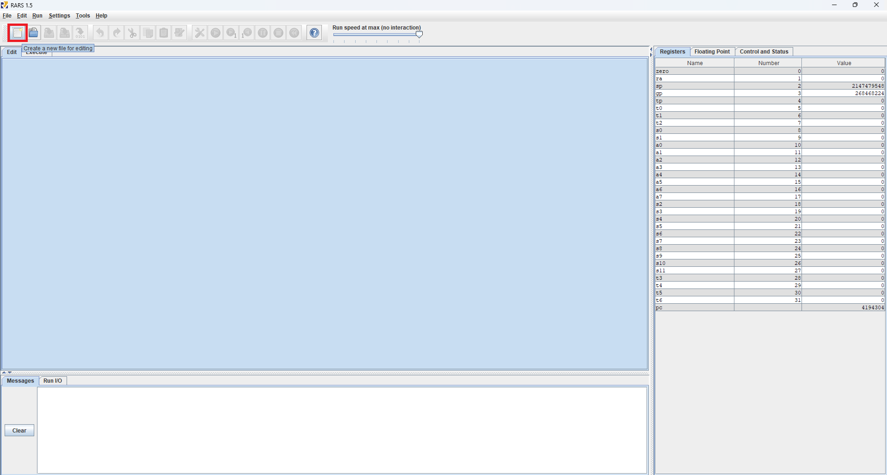
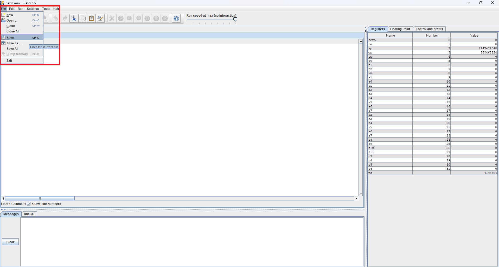
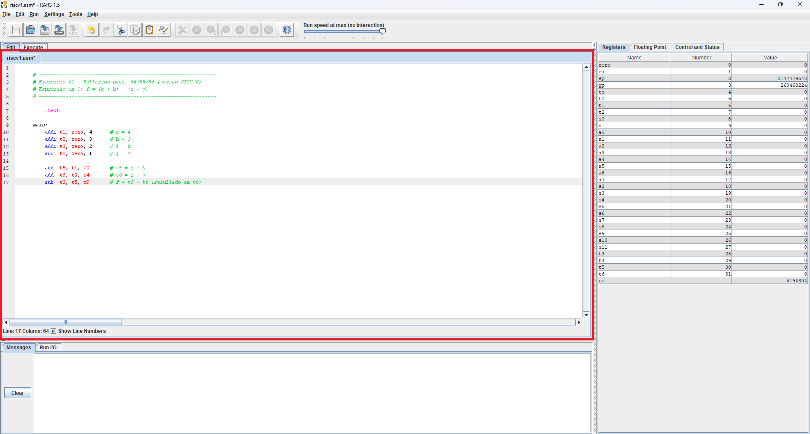
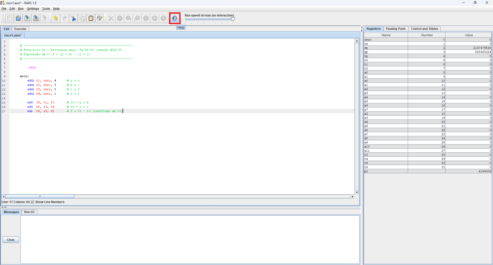
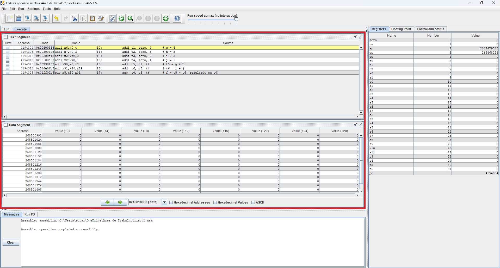
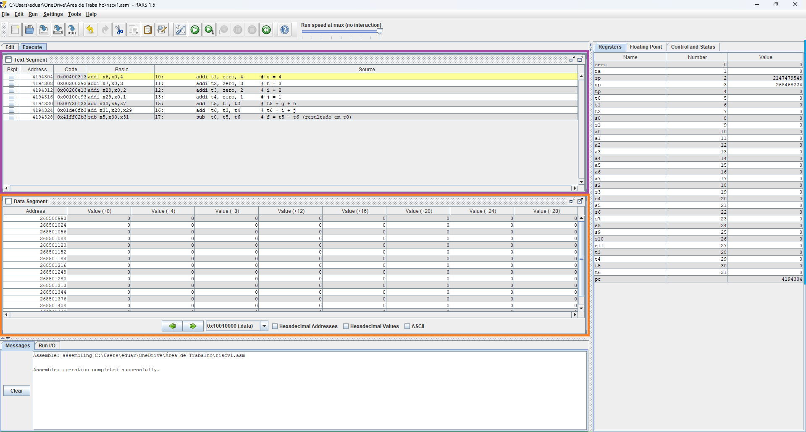
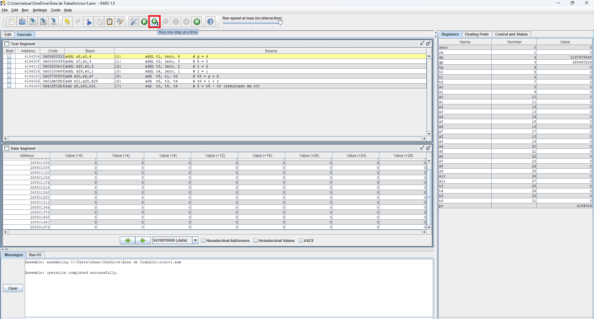
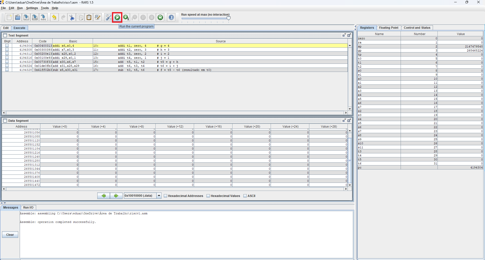

Autor: Eduardo Michel Deves de Souza
Revisão: Prof. Dr. Douglas Rossi de Melo
RARS (RISC-V Assembler and Runtime Simulator) é um simulador que permite montar e simular a execução de programas em linguagem de montagem RISC-V, oferecendo suporte para as arquiteturas riscv32 e riscv64. Com funcionalidades como depuração por breakpoints, suporte a chamadas de sistema e comparação entre pseudo-instruções e código de máquina.
Antes de começar a usar o RARS, é importante entender como estruturar corretamente um programa em linguagem de montagem RISC-V. O código é dividido em duas partes principais: .data e .text.
Cada linha pode conter até quatro partes:
ROTULO:
MNEMÔNICO OPERANDOS # COMENTÁRIO Exemplo:
main:
addi x5, x0, 2 # x5 = 2
addi x6, x0, 2 # x6 = 2
soma: add x7, x5, x6 # x7 = x5 + x6
O segmento .data é onde você define variáveis e vetores. Ele vem antes do segmento .text, mas só é necessário se você for usar dados no seu programa.
Diretivas mais comuns:
Exemplo:
.data
num: .word 5
vet: .word 10, 20, 30, 40
msg: .string "Olá, mundo!"
buffer: .asciiz ""
É nele que ficam as instruções do programa, ou seja, o que será executado pelo simulador.
Exemplo:
.text
main:
addi x5, x0, 2 # x5 = 2
addi x6, x0, 2 # x6 = 2
add x7, x5, x6 # x7 = x5 + x6
O RARS precisa ser baixado e executado a partir de um arquivo JAR. É necessário ter pelo menos o Java 8 instalado para rodá-lo. A versão mais recente pode ser encontrada na página de releases, enquanto a versão com os últimos desenvolvimentos está disponível na release contínua.
Você pode baixar o RARS diretamente do repositório oficial: https://github.com/TheThirdOne/rars.
Para começar, clique no ícone de criação de arquivo no menu superior para criar um novo arquivo.
Depois, salve o arquivo antes de começar a escrever seu código.
Após salvar o arquivo, você pode começar a digitar seu programa em linguagem assembly RISC-V diretamente na aba Edit, localizada no menu superior.
Se precisar de ajuda com a sintaxe ou comandos disponíveis, clique no botão Help. Esse botão abre uma seção com instruções e exemplos úteis para a escrita correta do código.
Após escrever seu código, clique no botão Assemble Code para iniciar o processo de montagem. Essa etapa converte o código escrito em linguagem de montagem (assembly) para linguagem de máquina, que é compreendida pelo simulador.

Ao concluir a montagem, o simulador alterna automaticamente para a aba Execute, onde o código convertido é exibido e fica pronto para execução. Nessa aba, é possível visualizar cada instrução com seus respectivos endereços.
O RARS é dividido em várias janelas com funções específicas:
A seção de execução, apresentada na imagem abaixo, mostra o código montado e o estado atual da memória. O painel é subdividido em duas áreas: o Text Segment, que exibe as linhas de código após a montagem, e o Data Segment, que mostra a memória. O usuário pode navegar pelas páginas de memória, visualizar dados em diferentes formatos e acompanhar apenas os endereços alterados.
Com o código montado, você pode executar o programa passo a passo clicando no botão Run One Step. Cada clique executa uma única instrução, permitindo acompanhar as alterações feitas nos registradores e a indicação da instrução atual no Text Segment.
Se preferir, é possível executar o programa por completo clicando no botão Run. Isso fará com que todas as instruções sejam processadas de uma vez, exibindo os resultados finais nos registradores e no Console.
Agora que você conhece o funcionamento do RARS, execute os exercícios 1 a 4 propostos para praticar a criação de programas em linguagem de montagem RISC-V.